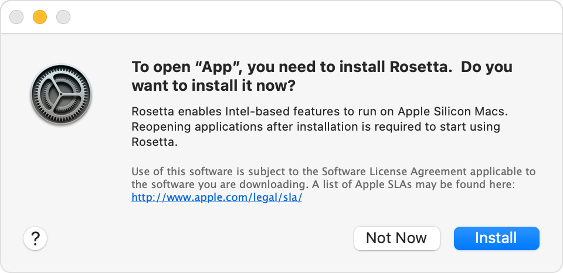

Technocoder’s Wineskin with support for Apple Silicon under Rosetta 2¶
This guide will walk you through how to install Technocoder’s Wineskin with Apple Silicon support. It should also work on all other modern versions of macOS too.
Using macOS Catalina 10.15.0 to 10.15.4?
Warning
This section only applies to users who are using macOS Catalina 10.15.0 to 10.15.4
If you do not use macOS Catalina, or you are on macOS Catalina 10.15.5 or later, you can skip this section!
If you don’t know what specific macOS version you’re using, use this Apple support article to learn how to find out.
Apple recently introduced changes to how macOS works. New Macs come with System Integrity Protection.
Therefore, in order to run osu!mac on macOS Catalina 10.15.0 to 10.15.4 you need to disable System Integrity Protection.
Danger
While disabling System Integrity Protection shouldn’t harm your computer directly, you are sorta compromising the integrity of your system (hence the name ‘System Integrity Protection’).
Please be informed about the risks of disabling SIP. Consider updating your macOS instead.
You can learn more about SIP in this Apple support article.
These instructions are quoted from the Apple Developer documentation.
To disable SIP, do the following:
Restart your computer in Recovery mode.
Turn on your Mac and immediately press and hold these two keys: Command (⌘) and R.
Release the keys when you see an Apple logo, spinning globe or other startup screen.
You may be prompted to enter a password, such as a firmware password or the password of a user who is an administrator of this Mac. Enter the requested password to continue.
Launch Terminal from the Utilities menu. It should be in the menu bar at the top of your screen.
Run the command
csrutil disable.Restart your computer. You can do so from the top menu bar (just like you would normally)
Once you have SIP disabled, you’re now set to start getting ready with osu!.
Step 1: Download the Wineskin¶
Download the osu! Wineskin from Technocoder:
osu! forum thread: https://osu.ppy.sh/community/forums/posts/7560723
Note
To play osu! on macOS a compatibility layer called Wine is used. A Wineskin allows a preconfigured version of Wine to be bundled as one app so that you can get right into the game without messing about with the settings.
Once it has downloaded, extract the .zip file.
Move it outside of your Downloads folder, such as your Desktop. This is really important, as not doing so could lead osu! to be sandboxed.
We also recommend downloading Technocoder’s osu!macOS Agent program, since it’ll be used throughout this guide. In general, it’s a great tool that every macOS osu-stable player on Wine should have. However, this is optional (though strongly encouraged) and alternative instructions are provided for those who are comfortable with digging deeper.
osu! forum thread: community/forums/topics/1036678
GitHub download link (7.61MB): https://github.com/Techno-coder/…
Warning
On 12 October 2020 a bug was introduced with an update for osu!macOS Agent. It caused Wineskin.app to display a error that left the settings menu unopenable. You’ll need to download the newest version of osu!macOS Agent, which was updated on 23 January 2021. See Wineskin.app doesn’t open, even if osu! does / exec[number].bat problem.
Step 2: Repair the Wineskin¶

If you try to open the Wineskin immediately, macOS will say that it’s broken. Let’s fix that.
Open osu!macOS Agent
Click the Troubleshoot tab
Click Scan
Once the scan is complete, click Repair
If it was successful, you should see a Fixed indicator next to Quarantine attribute is present in the log.
Note
When opening the Wineskin for the first time, you might be prompted to install Rosetta 2 on your M1 Mac if you haven’t already.
Alternative option: Using the Terminal
On the bleeding edge? You can also use the Terminal to repair your Wineskin.
Open Terminal. It should be in your
Applications/Utilitiesfolder.Type the following command.
sudo xattr -rd com.apple.quarantine "~/path/to/my/osu\!.app"
where ~/path/to/my/osu\!.app is the filepath to your osu! install.
For example: if my osu!.app was in the Desktop, the command to enter would be:
sudo xattr -rd com.apple.quarantine "/Users/Adrian/Desktop/osu!.app"
Below are some helpful tips if you’re a bit lost, but if you know what you’re doing feel free to skim over them.
Note
For an application with the name osu!.app, the ! will confuse the Terminal window. Therefore, you must escape it by prefixing the ! with a \ (backslash) to form osu\!.app. It is also recommended you enclose the filepath in quotation marks.
Note
You may be asked for your password. While entering your password the cursor might blink but you won’t see any characters appear on the screen - this is normal! Just proceed to type your password as if there was a dialog box there, and hit Enter once you’re done. (If you stuffed it up you’ll get another chance to retype it.)
Tip
If you get a Permission denied error it means you aren’t using an administrator account. In your Terminal window, type:
su - administrator
where administrator is the name of your system’s admin account. When the Password: prompt appears, enter your password for administrator (or whatever your admin account is). Then try running the Terminal command (or to do this automatically, type sudo !!).
If you don’t know which account is your admin account (like if you use a family computer), go to the Apple menu (top-left corner of the screen) > System Preferences... > Users & Groups and you should be able to see which account is your administrator account. You’ll still need the password to execute the command though.
Note
On older macOS versions, you may get a warning that looks like this.
Improper use of the sudo command could lead to data loss or the deletion of important system files. Please double-check your typing when using sudo. Type "man sudo" for more information. To proceed, enter your password, or type Ctrl-C to abort.
Type your password as normal, as shown above.
Tip
Having trouble finding the filepath of your osu! installation? You can drag and drop the file from your installation directory (or the Desktop) to get the path!

Warning
Unless you do something incredibly stupid, you probably won’t completely stuff your computer. That being said, if you do something incredibly stupid, you’ll stuff your computer. The sudo command allows your local user account to perform otherwise restricted actions, so please don’t go around typing random things if something’s not working - ask us a question instead!
Step 3: Updating osu!¶
At this point, you should have already repaired osu! and now you’re set to open it. In some cases, this will work perfectly, but for most people including myself, osu! will be stuck in an update loop. It can even be difficult to kill the process once it starts updating.
Tip
If you ever have trouble closing osu! once it’s stuck in an update loop, see Common issues: osu! won’t close.
Note
Does osu! appear to be running fine? If you’re not stuck in an update loop, then you can easily skip this section.
Open osu!macOS Agent
Click the Other tab
Click Update osu!

This will download the latest executable from the osu! servers and replace the existing osu!.exe inside your Wineskin wrapper.
Alternative option: Manually installing the latest version of osu!
If you’re brave enough to go it alone, these steps will get you the latest version of osu! running - avoiding the possibility of an update loop.
Download
osu.exefrom osu.ppy.sh/home/download.Locate where
osu!.app(your Wineskin) is installedRight click on it and select
Show Package ContentsYou should now see three files/folders:
Contents,drive_candWineskin. Clickdrive_c.From here, click
osu!.From here, locate
osu!.exeand replace this file with the updated version that you just downloaded. Make sure you keep the filename the same.
Step 4: Run osu!¶
Now everything should be good to go! Click osu!.app in whichever directory you placed it in and try it out for a spin!
Did things not go to plan? Check out Common issues to see if someone else has encountered your problem before, or ask a question on the osu! forums.
If everything turned out fine, check out Setting up your screen options and Welcome to osu! to improve your osu! experience. We’d recommend doing this before you start clicking circles.